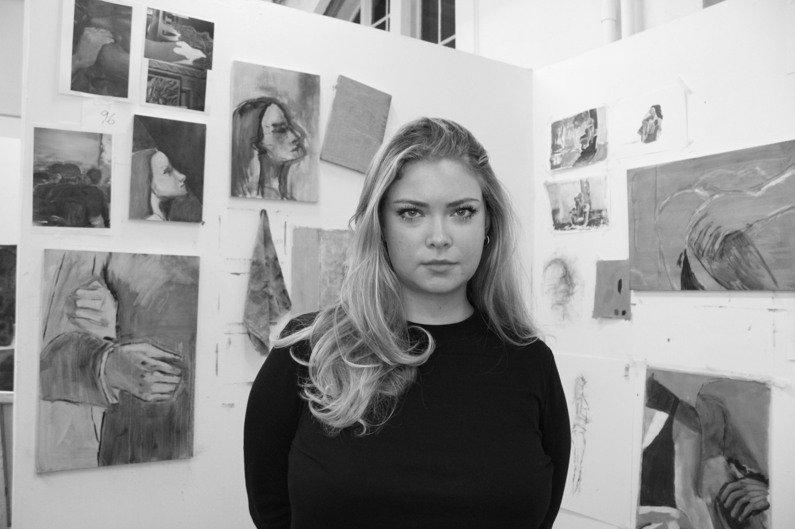

I'm Bella Bacon, a London based artist, and my practice centres around the human character and experience of connection; with self, others and the natural world.
Intrigued by relationships, I currently consider the love and empathy that can be felt (or not felt) when close to another.
While thinking conceptually of this 'closeness', I depict it through physical scenes: bodily intimacy between two figures or cropped portraits, that make the viewer themselves feel close to the subject, and zoomed in moments of landscapes that surround the figures and faces.
I work mostly from vintage photographs from the community archive Fortepan, combined with the occasional personal reference image.
I recently graduated from Camberwell College of Arts, having studied both Fine Art and Creative Computing, and am currently with the Crème Fraîche incubator programme.
Exhibitions
- Yearbook — Crème Fraîche2026
- Summer Exhibition — Royal Academy2026
- Graduate Show — Camberwell College of Arts2026
- Threshold — Southwark Park Galleries2026
- Amid — Studio Two Point2026
- Resonance — The Axe2026
- Faraway — Open Gallery2024
- Contemporary Tones — Proud Galleries2024
- Milk and Honey — Brixton Tate Gallery2024
- Coalesce — Copeland Gallery2024
- After Then, Before Now — The Bargehouse, OXO2023